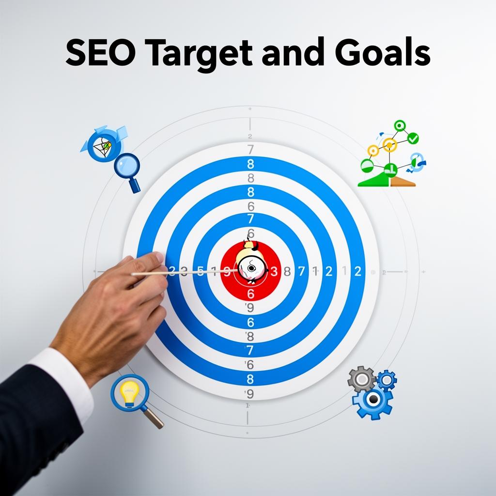

Affordable Search Engine Optimization (SEO) Services
Future-Ready SEO That Delivers Visibility, Traffic & Conversions

Future-Ready SEO That Delivers Visibility, Traffic & Conversions
Google now answers questions directly using AI. We optimize your content so it can be cited inside these AI results.
Content quality is the new currency of visibility. We build trust signals into every page.
From lists and FAQs to videos and tables, we structure content to win zero-click searches
With more image packs and video carousels appearing in SERPs, we integrate visual SEO into your strategy.
Search has changed. Ranking in Google is no longer just about being on page one — it's about being the definitive answer across AI Overviews, featured snippets, video carousels, and local results. At Ananya SEO, we help businesses future-proof their online presence with strategies built for 2025 and beyond.
Comprehensive SEO Strategy for 2026 and beyond. Modern SEO isn't just about keywords anymore. It's about understanding the customer journey, optimizing for AI-powered search results, and building true topical authority.
01.
Optimize for Google AI Overviews & SGE
Content structured for featured snippets and People Also Ask
Schema markup for FAQs, reviews, products, services
Short, authoritative answers built into service pages

02.
Pillar + cluster model → comprehensive guide + supporting posts
Evergreen resources (guides, FAQs, checklists) that stay relevant
Visual and video content optimized for SERPs
Semantic keyword integration for topical authority
03.
High-quality link building via guest posts & PR coverage
Local citations in trusted business directories
Mentions in industry sites and media for stronger authority
04.
Google Business Profile optimization
Location-based landing pages (city, state, country)
Reviews management + schema markup for star ratings
Citations on Yelp, Bing Places, Apple Maps, YellowPages
1
Identify high-intent keywords, research AI Overview triggers, map search intent, and create topical authority clusters.
2
Fix crawlability issues, optimize Core Web Vitals, implement security measures, and ensure mobile-first indexing.
3
Optimize titles, meta descriptions, headings, content structure, image optimization, and semantic keyword integration
4
Create evergreen content, case studies, FAQ sections, how-to guides, and content optimized for featured snippets.
5
Implement comprehensive schema markup for organization, services, FAQs, reviews, and local business information.
6
Google Business Profile optimization, citation building, review management, and location-based content creation.
7
GA4 setup, Search Console monitoring, ROI tracking, monthly reports on rankings, traffic, and conversion metrics.
Common questions about SEO services, timelines, and what to expect when working with us.
SEO should ideally start during the website planning and development stage. The SEO foundation begins as soon as you register your domain and start building your website. At this stage, activities such as keyword research, site structure planning, page content writing, internal linking, and technical SEO setup should be implemented.
It is also helpful to start publishing blog posts early—such as articles about your company launch, services, locations, or industry insights. This helps search engines discover and index your website faster.
Fixing SEO issues later on a poorly structured website can be much more difficult and expensive than implementing SEO correctly from the beginning. Your business can also be listed on Google Business Profile and trusted directories to start building online authority even before the website is fully launched.
A good SEO agency should be transparent and proactive. Here are a few signs to look for:
• Do you receive clear monthly SEO reports showing organic traffic, rankings, and work done?
• Do they discuss strategy and content ideas with you regularly?
• Are they improving your Google Search Console and GA4 metrics?
• Are they helping improve your website content and user experience?
Be cautious if the agency focuses only on rankings without explaining traffic growth, leads, and conversions. SEO today is about improving overall website visibility and authority, not just ranking a few keywords.
SEO is a long-term strategy, not a quick fix. For most websites, noticeable improvements usually start appearing within 3–6 months, while strong and stable rankings may take 6–12 months or more, depending on the competition.
No ethical SEO agency can guarantee first-page rankings in a short time. Search rankings are constantly changing based on competition, user location, device, and Google's algorithm updates.
Sustainable SEO focuses on high-quality content, technical optimization, and credible backlinks so that rankings improve steadily and remain stable over time
Our SEO services typically include:
• Keyword research and search intent analysis
• Technical SEO and website audit
• On-page optimization (titles, meta tags, content optimization)
• Content creation and blog writing
• Internal linking and site architecture improvements
• High-quality link building and digital PR
• Local SEO optimization (Google Business Profile)
• Performance tracking using Google Analytics 4 and Google Search Console
SEO is an ongoing process focused on improving visibility, traffic, and conversions.
Modern search engines automatically discover websites through links and crawling. It is generally not necessary to manually submit a website to search engines.
However, we do ensure that your website is properly indexed by:
• Submitting an XML sitemap to Google Search Console and Bing Webmaster Tools
• Optimizing robots.txt and crawl settings
• Monitoring indexing issues and search performance
These steps help search engines understand and crawl your website more efficiently
To begin the SEO process, we usually require:
• Access to your website CMS (content management system)
• Access to Google Search Console and Google Analytics
• Information about your products, services, and target customers
• Input on your preferred keywords and target locations
We may also collaborate with you to create new content or service
pages, which you can review and approve before publishing.
We offer affordable SEO services for small and medium businesses, with plans typically starting from around USD 300 per month, depending on the scope of work and competition in your industry.
We also offer significant discounts for non-profit organizations in India, especially those working to support disadvantaged communities, the elderly, disabled persons, and underprivileged groups.
Please contact us for a custom SEO proposal tailored to your business goals.